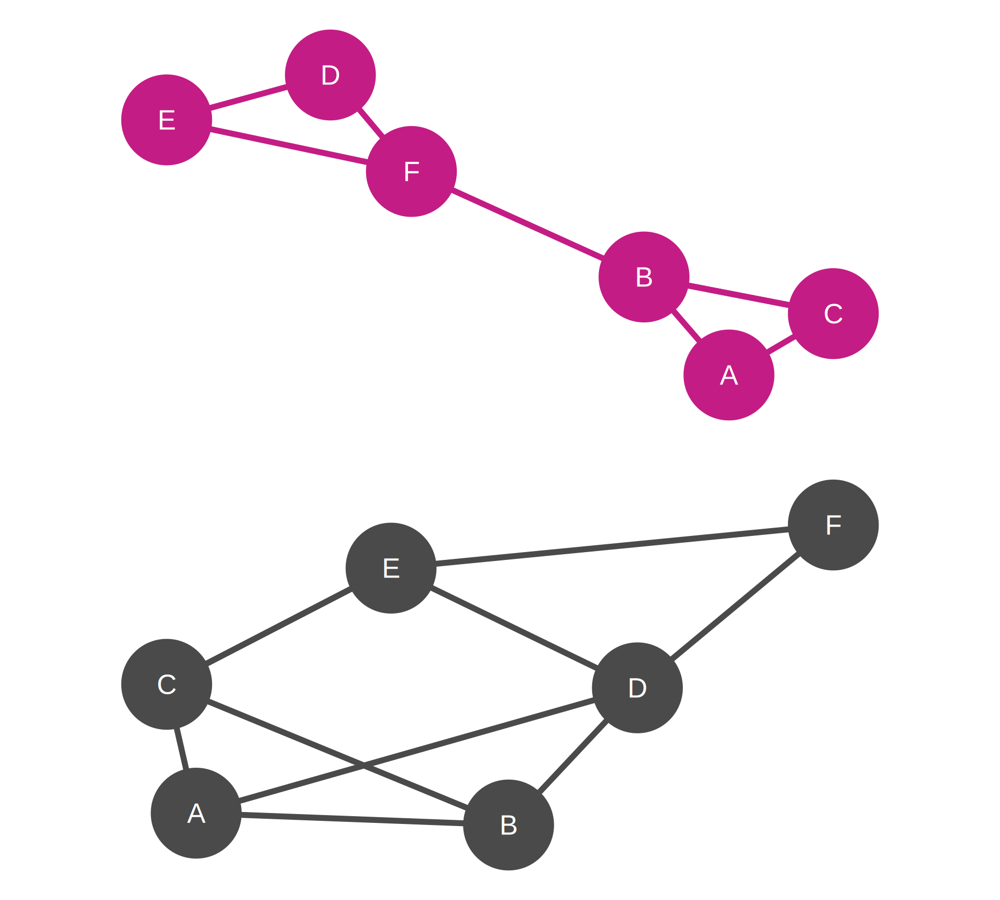

Taxonomy of Network Analysis Indicators
Macro, Meso, and Node-Level Measures
Three Levels of Analysis
Network indicators operate at different scales:
| Level | Focus | Questions |
|---|---|---|
| Macro | Entire network | How big? How centralized? How connected? |
| Meso | Groups/Communities | Are there clusters of nodes? How modular? |
| Micro/Node | Individual positions | Who is central? Who bridges groups? |
Macro-Level Indicators
Whole Network Properties
Characterize the overall structure and global patterns
Key Measures:
- Network Size: Number of nodes and edges
- Density: Proportion of possible connections realized
- Centralization: Concentration of connections
- Diameter: Maximum distance between any two nodes
- Average Path Length: Mean distance across all pairs
- Fragmentation: Presence of disconnected components
Purpose: Understand network-wide characteristics and compare across networks
Example: Network Size and Density
Definition: Basic structural properties
- Node count: Total number of vertices (\(n\))
- Edge count: Total number of connections (\(m\))
- Possible edges: \(\frac{n(n-1)}{2}\) for undirected networks
Business Example: LinkedIn Network
- Small startup network (50 employees)
- Possible connections: 1,225
- Observed connections: 245
- Density: 20%
- Large corporation network (5,000 employees)
- Possible connections: 12,497,500
- Observed connections: 187,500
- Density: 1.5%
Insight: Larger networks typically have lower density
Network Metrics:
| Nodes (n) | 5 |
| Edges (m) | 6 |
| Possible Edges | 10 |
| Density | 60.0% |
Example: Centralization
Definition: Extent to which connections concentrate around few nodes
- High centralization: Star-like, hierarchical structure
- Low centralization: Distributed, egalitarian structure
Business Example: Communication Patterns
Startup (Low Centralization = 0.25)
- Flat structure with distributed communication
- Multiple people coordinate projects
- Information flows through many channels
Traditional Corporation (High Centralization = 0.78)
- Hub-and-spoke: most communication through managers
- Clear hierarchy and formal reporting
- Information bottlenecks at central nodes
Implication: Centralization affects agility, innovation, and resilience
Network Metrics:
| Network | Size | Density |
|---|---|---|
| Higher centralization (top) | 5 nodes, 4 edges | 40.0% |
| Lower centralization (bottom) | 5 nodes, 8 edges | 80.0% |
Meso-Level Indicators
Community and Subgroup Structure
Identify cohesive groups and organizational patterns
Key Measures:
- Modularity: Quality of network partitioning into groups
- Community Detection: Algorithmic identification of clusters
- Core-Periphery: Distinction between dense core and sparse periphery
- Structural Holes: Gaps between groups creating brokerage opportunities
- k-cores: Subgraphs where all nodes have minimum degree k
Purpose: Reveal hidden organizational structure and group boundaries
Example: Network Modularity
Definition: Strength of division into communities
- Measures how well network separates into distinct groups
- Higher values indicate stronger community structure
Business Example: Corporate R&D Network
Higher Modularity
- Clear separation: Chemistry, Biology, Engineering teams
- Limited cross-disciplinary collaboration
- Potential for siloed innovation
Lower Modularity
- Extensive cross-team connections
- Interdisciplinary collaboration
- Potential for breakthrough innovation but coordination challenges
Strategic Implication: Community structure reflects organizational integration vs. specialization trade-offs

Node-Level Indicators
Individual Position and Influence
Characterize actor positions within the network
Major Categories:
Centrality Measures: Various ways to measure importance
- Degree, Closeness, Betweenness, Eigenvector
Structural Position: Role in network architecture
- Bridges, Brokers, Isolates, Cliques
Local Clustering: Cohesion of immediate neighborhood
Embeddedness: Integration into network structure
Purpose: Identify influential actors, structural advantages, and vulnerabilities
Summary: Levels in Practice
Integrated Analysis Framework:
Macro Level → Strategic organizational design
- Should we have a centralized or distributed structure?
- How connected is our organization overall?
Meso Level → Team and department dynamics
- Are we too siloed or too integrated?
- Where are the boundaries between groups?
Micro Level → Individual talent management
- Who are our key connectors and influencers?
- Who has structural advantages or disadvantages?